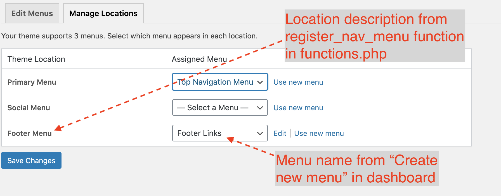

Code Sample 11.1: Registering Navigation Menus and Using JavaScript to Open a Coupon Code Modal
This week we will revisit the associative array via the WordPress menu system and also we will look into a manual way to load some custom JavaScript.
TASK 1: Register a New Navigation Menu for the Footer Links
We could always hard-code menu links with root relative paths so that they would work even on nested pages but this has one huge disadvantage – the client would have to come back to us each time they wanted to change this set of links in any way, so we will do it the right way here.
Copy this function into the end of your functions.php (the one in understrap-child-master)
// Here we register another menu
add_action( 'init', 'digd417_register_menu' );
//the first argument is the menu slug and the second is the menu description for the WP dashboard
function digd417_register_menu() {
register_nav_menu( 'footer', __( 'Footer Menu' ) );
}
Now we need to call this menu in our theme – the site footer gets printed out by our theme's footer.php, which you should COPY from the parent theme into the root of the understrap-child-master folder.
To actually see the menu, we need to populate the WordPress database with link entries for our additional menu. This can be tricky: Here are the steps:
To create a new menu in WordPress, go to Appearance > Menus and then there is a hard-to-find link (look to the right of the "Select" button) labeled "create a new menu."
Then we need to make sure we assign the menu to the correct location of "Footer Menu" with either the checkbox on the create menu main screen or on the "manage locations" tab: 
Once we have our footer.php and our database entries in place, we can then use the following WordPress helper function to finally display our new menu (note you have to use menu name you entered in the step above in the function:
A logical place to put it is within the div with a class of site-info inside the footer.php file that you just copied into the child theme folder. This is because then we can display the copyright notice and the footer links all on one line.
Now notice that I am outputting a pipe character like this | after each link at https://jeffersonweb.wpengine.com. Use the inspector to see the exact markup I am injecting, which is a pipe character within a <span>.
Go to the WordPress Developer reference and look for the key => value pair to use to insert text after the link markup – Add this to the associative array in our wp_nav_menu function on a new line after the line that reads 'depth' => 1,.
Inspect my page at https://jeffersonweb.wpengine.com to see the custom CSS I am using to keep the copyright notice and links all on one line and to hide the pipe character after the LAST footer link. To make this easy for you I put an inline <style> block right after the copyright notice in the code.) Copy and paste the STOLEN CSS rules into your customizer and see if it works.
DM me the result after you push your change to your REMOTE site.
TASK 2: Using Javascript to Open an Alert to Display a Coupon Code
If you scroll down on this page https://jeffersonweb.wpengine.com/featured-products you will see that the coupon code alert animates in – this kind of motion can be an effective way to capture the user's attention. To do this, we need two things: styles and JavaScript – the trick here is we add the stylesheet in functions.php and for this exercse we will put the custom JavaScript directly in a custom footer.
We are going to use a canned library of CSS animations called animate.css – we can use this library by enqeueing the hosted stylesheet with this function added to functions.php where we enqeueud the other stylesheets wp_enqueue_style( 'animate.css', 'https://cdnjs.cloudflare.com/ajax/libs/animate.css/4.1.1/animate.min.css', array(), $the_theme->get( 'Version' ) );
TIP: To figure out where to put this snippet just remember that it must be within the function in functions.php that is called theme_enqueue_styles AFTER the line that reads $the_theme = wp_get_theme(); because it will throw an error if you include it before this variable definition.
We also need to use the following jQuery code and we need to add it in the footer of our website – EXCEPT since we do not want to use this script on all pages we can easily limit where it used by copying our child theme's footer.php to a file name called footer-custom.php because in our template for this week we use a special way to call the footer by passing it an argument like this <?php get_footer('custom'); ?> on line 74 of tonight's template in the embedded Gist below.
Note the word 'custom' in the parentheses – this tells WordPress to use footer-custom.phpinstead offooter.php.
To summarize, the WordPress function get_footer (codex page here) prints out the designated footer file and the WordPress function wp_footer() is an action hook that we use inside our footer file to "print scripts or data before the closing body tag on the front end" (codex page here).
Then we can just paste this script into footer-custom.php just before the </body> tag.
So with both of these elements in place we can then create a new page with the template below and select it via its name of "Simplified Page -- Practice Custom Footer." At this point the alert in the template should animate into view when you scroll down to its position in the code.
If you examine the template code, you can see that we hard-code into this template a shortcode after the comment that reads "START use the do_shortcode WordPress function to print out 4 featured products" – to set a product as featured you can just click on Products > All products and then just click the star icon on four of your products to render the four products.
Then, once you have the animation working (if testing on phone, make sure "reduce motion" is not on), change the animation to one of the Attention Seeker animations at https://animate.style
.
When done, just DM the URL of your use of this template.
Here Is the Revised Template We Will Use For the Animated Alert